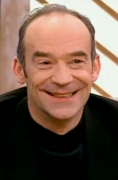
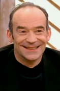
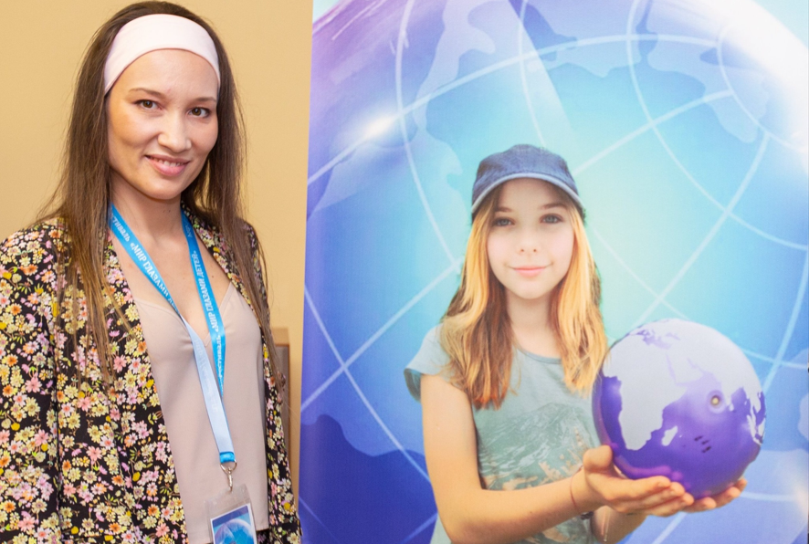
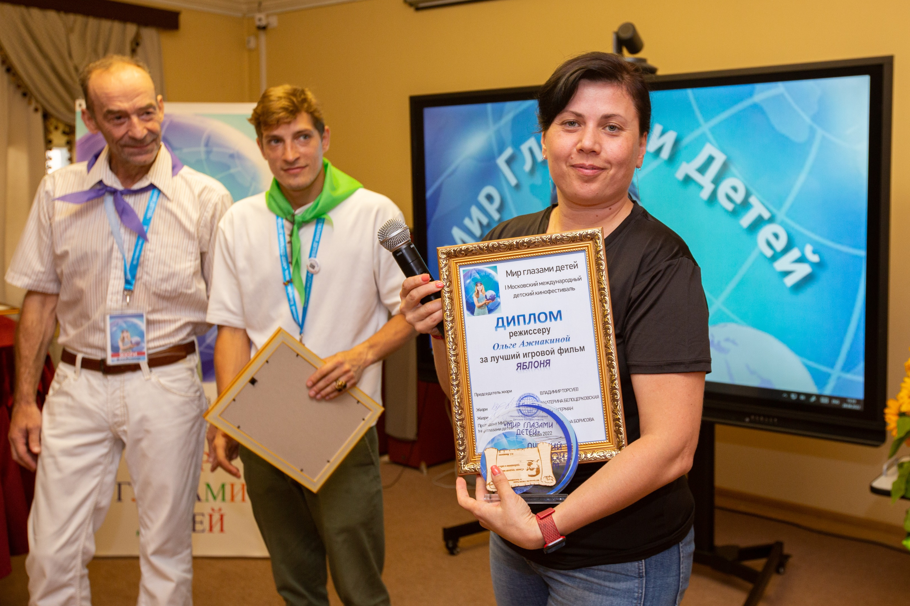
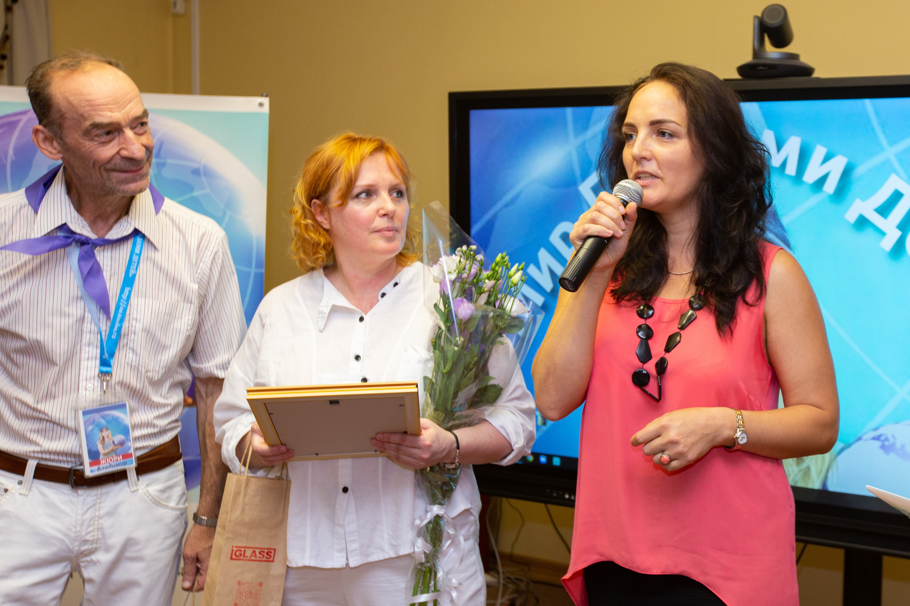
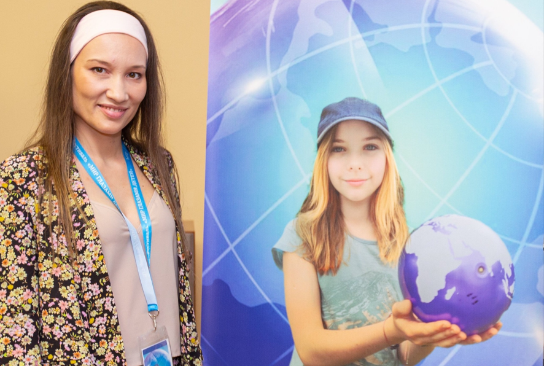
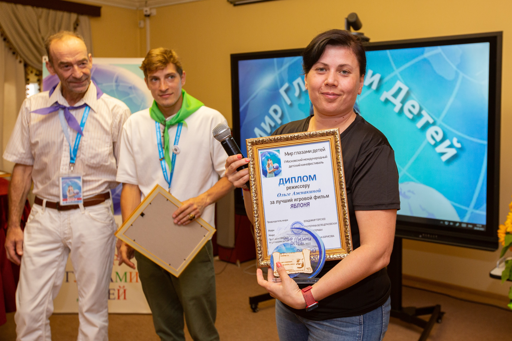
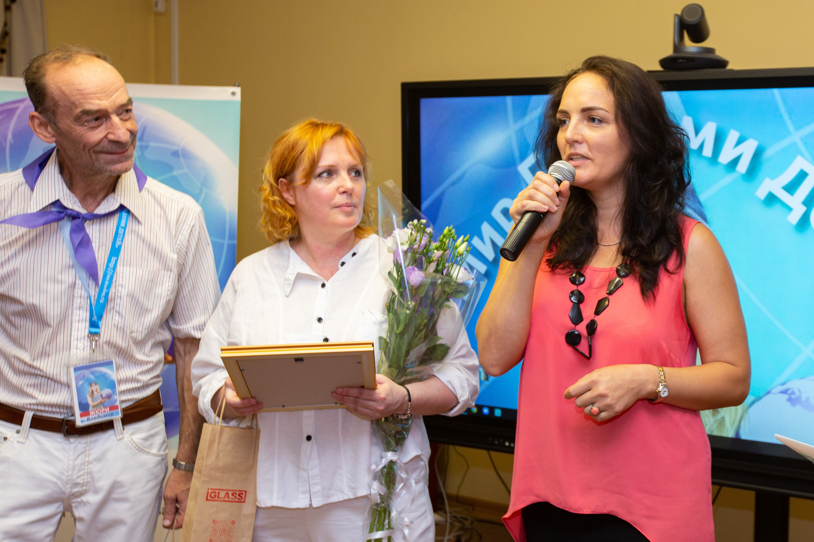

Первый международный детский кинофестиваль
Первый Московский международный детский кинофестиваль "Детский глобус - МИР глазами детей" состоялся в декабре 2022 года. Это было историческое событие, положившее начало ежегодной традиции.
👑 Основатели фестиваля
История создания
Январь 2022
Идея создания международного детского кинофестиваля. Формирование инициативной группы.
Март 2022
Разработка концепции и положения фестиваля. Создание официального сайта.
Май 2022
Начало приема заявок. Поступило более 200 заявок из 15 стран.
Сентябрь 2022
Формирование жюри. Отбор 50 фильмов для конкурсной программы.
Декабрь 2022
Проведение фестиваля. Торжественное открытие в кинотеатре "Каро Атриум".
🏆 Победители I фестиваля 2022
По итогам первого Московского международного детского кинофестиваля были определены победители в различных номинациях. Жюри отметило высокий уровень представленных работ.
ГРАН-ПРИ фестиваля
🎬 Основные номинации
🎖️ Специальные призы и награды
Специальный приз жюри
Юная актриса
Юный актер
Лучшие костюмы
Медаль Бориса Грачевского
Специальные призы фестиваля:
Призы и сертификаты:
- Приз от Екатерины Белоцерковской – сувениры журнала Ералаш для Канской колонии и героев фильма «Отец и сыновья»
- Призы от IGlass
- Сертификат от студии «GRAF» – «Монеточка» – Элизабетта Бальби
- Сертификат от студии «GRAF» – «3 добрых дела» – студия Переславль
Ключевые достижения I фестиваля
Международное участие
3 страны-участницы
Более 200 заявок
Фильмы
50 фильмов в программе
Жанры: игровое, документальное, анимация
Номинации
12 основных номинаций
5 специальных призов
Участники
300+ юных кинематографистов
30 мастер-классов
Жюри первого фестиваля
📸 Фото жюри 2022 года
 

 





Владимир Торсуев
Актер, председатель жюри
Юрий Торсуев
Актер
Екатерина Белоцерковская
Актриса, певица
Руслан Герман
Актер, режиссер
Наследие I фестиваля
Первый фестиваль заложил основы для ежегодного проведения мероприятия. Были установлены стандарты отбора фильмов, сформирована команда организаторов и созданы партнерские отношения с культурными учреждениями.
Фестиваль 2022 года получил положительные отзывы от участников, зрителей и профессионального сообщества, что позволило сделать его ежегодным событием.